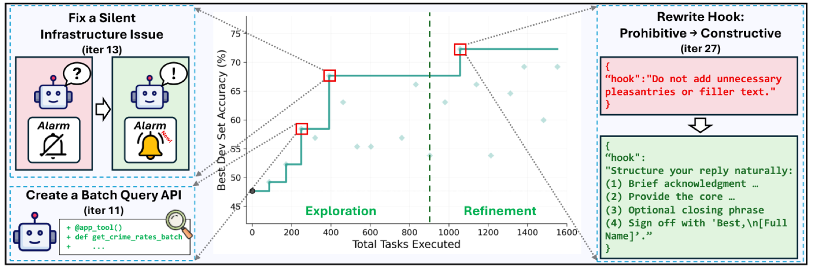

AutoSaddler: Automatic Harness Patching Is Easy; Keeping the Patches That Help Is Hard
TL;DR
- "AutoSaddler: Automatic Harness Optimization with Durable Updates from Agent Execution Traces" (arXiv 2608.23041; Sungho Park, Wonjoong Kim, Rongyuan Tan, Jue Zhang, Wook-Shin Han, Pengfei Gao, Chanyoung Park, Yongqiang Yao, Rao Fu, Elsie Nallipogu, Qingwei Lin, Saravan Rajmohan, Dongmei Zhang — Microsoft, KAIST, POSTECH, SUSTech) treats harness optimization as mini-batch offline learning over textual parameters: run a small batch, diagnose the failures, patch prompts/tools/middleware as code, and — the part everyone skips — verify on a held-out development set before keeping anything.
- The single most useful number in the paper is an ablation. Remove generalization-aware selection and GAIA2 test accuracy is 50.6% — below the 53.0% hand-written harness the whole search started from. Letting a model rewrite your harness without a held-out check does not merely fail to help; it makes things worse. With the check: 62.0%.
- Gains over the base harness are +9.0 pp (GAIA2), +9.6 pp (SWE-Bench Pro), +10.0 pp (Terminal-Bench 2.0), beating GEPA and Meta-Harness on all three and beating the expert hand-tuned Terminus KIRA on TB2. It is also far cheaper: best dev score after 147 leveraged traces versus Meta-Harness's 1,400.
Why this matters
Everyone who has pointed a coding agent at their own agent's prompt file knows the first half of this: the patches come easily and they look great. The failure trace says the agent didn't check the parent directory before mkdir, so you add a rule saying check the parent directory. It fixes the case. You ship it.
What you do not see is the eleven other tasks where that rule now fires and wastes turns, or the hook you attached to a high-frequency tool that quietly redirects behavior across scenarios nobody was thinking about. Fixes are visible; collateral damage is not, because you only re-ran the tasks the patch was written for. Twenty iterations of this and you have a harness that has memorized your debugging session.
AutoSaddler measures exactly that gap. Its "w/o generalization-aware selection" ablation is a fully competent optimizer — same in-depth diagnosis, same structured patching, same mini-batch loop — that simply keeps any patch improving the batch it was written for. It achieves the same fix rate as full AutoSaddler on the dev set, and still ends up below the manual baseline, because its regression rate climbs while AutoSaddler's falls. Capability was never the difference. Selection was.
This lands squarely on the tracker's open wound. "Rethinking Harness Evolution" showed that harness-evolution papers routinely evolve and report on the same benchmark, and that forcing a real train/validation/test split collapses the gains to +0.6 on average. AutoSaddler is the response from inside the harness-optimization camp: build the split into the optimizer, make crossing it a precondition for keeping a patch, and show the result holds up on repositories and task universes it never saw.
The core idea
Treat the harness as a parameter vector you happen to write in English and Python, and then run the textbook loop.
![AutoSaddler overview: the current harness is tested on a mini-batch from the training set; a Diagnosis-Patch Agent analyzes failed traces and patches prompt, tool, or middleware layers under a phased exploration/refinement schedule; the patched harness is verified on the same mini-batch; if improved it is evaluated on the dev set; a Reflection Agent extracts lessons from before/after traces either way; lessons enter an EvoDAG of previously explored harnesses; an Evolution Agent synthesizes the next candidate from the whole graph](assets/keeping-harness-patches/fig1.png)
Figure 2 from the paper: the seven numbered stages of one iteration. Note stage 4 — the dev-set evaluation — is conditional, and stages 5–6 happen whether the patch was kept or thrown away.
The analogy to mini-batch training is not decoration; the paper works it out stage by stage in Appendix A, and the mapping makes the design decisions legible. Sampling a mini-batch and running the agent is the forward pass; the task outcome is the loss. Diagnosis, patching, and same-batch verification together stand in for backpropagation — because a failed rollout, unlike a loss value, does not tell you which parameter to move, the system must infer a root-cause hypothesis, implement it as an intervention, and empirically test whether it helped. The paper's framing of this is its sharpest sentence: a patch at this stage is not yet the parameter update; it is an experiment testing whether the inferred textual gradient points anywhere real.
Dev-set evaluation is validation. And the optimizer state — the analogue of momentum — is EvoDAG, a directed graph of every harness explored, annotated with what it changed, how it scored, and what was learned. The next candidate is synthesized from the whole graph rather than the last node, so the search can rebase onto an older ancestor and cherry-pick proven changes from unrelated branches.
One deliberate ordering inversion: standard training applies the optimizer update before validating. AutoSaddler validates first, because EvoDAG is part of the optimizer state — and a misleading lesson written into it steers every future round. Validation gates what gets remembered, not just what gets shipped.
How it works
The loop in one sentence. Run a few tasks, debug the failures properly, make one typed change, check it on the tasks it was written for, then check it on tasks it wasn't — and write down what you learned even when you throw the change away. Everything else is detail about the last two clauses.
One patch, start to finish
The setting is GAIA2, a simulated smartphone environment where each "universe" emulates one persona's digital life. The base harness is GAIA2's own default ReAct agent; the optimizer runs on Claude Opus 4.6.
Step 1 — Run the current harness on a handful of tasks. A mini-batch from the training split, not the whole set. Both successes and failures are kept, because you cannot recognize a regression later without knowing what was working before.
Step 2 — Read the failures like a debugger, not a reviewer. Take the paper's cab-booking case. The user's request matched two rides on September 30, and the agent should have noticed the ambiguity and asked which destination was meant. Instead it confidently booked using the first match and never saw the second, which sat at index 19 of the ride history.
The shallow approach — one LLM call given the trace, which is what most prompt-optimization pipelines do — never spotted the second ride, and produced a diagnosis about contact identification and oracle-call counts: fluent, plausible, aimed at the wrong thing. AutoSaddler's diagnosis agent instead opened the environment's actual ride history, filtered by date, found both candidates (index 5, Ahmedabad Railway Station; index 19, Chennai Central), and cross-checked against the oracle's expectation of zero ride orders. Only then did it name the cause: the agent could not see the conflict because nothing let it look.
The difference is investigative effort, and the paper quantifies it: +6.2 tool calls and +5.8 file accesses per optimization step over the shallow variant (69.7 and 45.5, versus 63.5 and 39.7). Small in absolute terms, decisive in effect — by iteration 25, deep diagnosis had produced 13 accepted patches to the shallow variant's 5.
Step 3 — Write the fix as a typed change to one of three layers. Not a free-form edit of the codebase. The patch must be one of nine subtypes across three layers:
| Layer | Subtypes | Kind |
|---|---|---|
| Prompt | rule addition, rule modification | steering |
| Tool | new tool, argument modification, implementation fix | capability |
| Tool | tool description fix | steering |
| Middleware | infrastructure change, agent-loop logic change | capability |
| Middleware | pre-tool-use hook | steering |
Capability changes mean executable code or orchestration; steering changes are text that leaves the code alone. For the cab case the fix is a new tool: search_ride_history, filtering by date, start location, and end location, so conflicting candidates surface in one call. The editor is shown the harness's functional source and explicitly blocked from evaluation code and benchmark data — the fence that stops it from optimizing against the answer key.
There is also a schedule. Early iterations prioritize capability changes; later ones switch to steering. The stated intuition is a learning-rate schedule: fix what the harness cannot do before tuning how it behaves.
Step 4 — Re-run the same tasks. Did it help here? A patch counts as a mini-batch improvement only if the batch score goes up. This is the cheap filter, and it exists so the expensive filter is not wasted on obvious duds.
Step 5 — Only then spend the expensive check, on tasks the patch was not written for.
The dev set is drawn from different task groups than training. The split is clearest on the paper's software-engineering benchmark: train on tasks from qutebrowser, develop on Vuls and NodeBB, test on Ansible, Flipt, and Element-web — a different repository at every stage, so a patch that memorized one codebase's quirks cannot pass.
Step 6 — Write down the lesson either way — including for patches you reject. The reflection agent compares before-and-after traces and sorts every task into fixed, regressed, still-failing, or still-passing, then answers targeted questions about each bucket. This is where the paper's central contrast lives.
At iteration 4, AutoSaddler proposed a calendar hook that fired indiscriminately on every event creation. It helped its batch. Reflection flagged it as over-scoped and it was blocked. At iteration 20, the ablation — no reflection, no dev evaluation — proposed a structurally identical patch: a new progress-message tool plus a hook on the widely used message-to-user tool that forcibly redirected traffic to it. It also helped its batch, and it was kept. On the next iteration the dev-set regression rate jumped from 8% to 22%, disrupting behavior across many unrelated scenarios.
Same failure mode, same optimizer, opposite outcome, and the only difference is whether anything was empowered to say "this helped, and it is still a bad idea." Over the run, AutoSaddler's regression rate trends down 0.24 pp per iteration while the ablation's trends up 0.16 pp per iteration.
Step 7 — Build the next candidate from the whole history, not just the last one. Because every harness tried so far, and every lesson written about it, sits in one graph, the system can abandon a bad branch entirely and restart from an older ancestor. The GAIA2 trajectory does exactly this: after iteration 20 crashed dev accuracy to 33.8% via a hook on a high-frequency tool, the search rebased onto iteration 13 (67.7%), cherry-picked the changes from iterations 13 and 14 that reflection had endorsed, and reached its global peak of 72.3% at iteration 27. Later, when iteration 46 over-accumulated eight cherry-picked hooks and rules and lost 12.3 pp, iteration 47 diagnosed collective steering overhead and pruned back to four, recovering to 69.2%.
The machinery behind steps 1–5
Four short definitions, then the selection rule that is the paper's whole argument.
What is being optimized. The harness parameter is a triple:
where \(\theta_{\text{prompt}}\) is the instructions and system prompts, \(\theta_{\text{tool}}\) the available tools and their interfaces, \(\theta_{\text{middleware}}\) the runtime control logic including hooks and agent-loop behavior, and \(\Theta\) the space of all valid harnesses. Memory and skill curation are deliberately excluded, because the paper assumes tasks are stateless and independent.
What is being maximized. The population objective is expected task performance:
where \(x\) is a task drawn from the task distribution \(\mathcal{T}\), \(y^{\ast}\) its gold answer, \(P_\theta\) the stochastic execution process the harness induces (randomness from sampling, tool-use decisions, and the environment), \(\tau\) the execution trace, \(\hat{y}\) the agent's answer, and \(\mu\) the task metric — here pass/fail. The double expectation is the honest part: even a fixed harness on a fixed task does not give a fixed result.
What can actually be measured. \(J(\theta)\) is unobservable, so on a finite dataset \(D\):
with \(|D|\) the number of tasks, \(R_i\) how many times task \(i\) was repeated, and \(\hat y_{i,r}\) the answer on repeat \(r\). Every repeat is a rollout — the budget the whole method is trying to spend well.
The selection rule — the paper in one line. Given a rollout budget \(K\) and the set of candidates explored within it:
where \(\mathcal{V}_{K,\mathrm{dev}}\) is the subset of explored harnesses that earned a dev-set evaluation (by first improving their own mini-batch), and \(\widehat{J}_{D_{\mathrm{dev}}}\) is the empirical score on the development split. The returned harness is the best on development, never on training — and it is scored once on test afterward, with no further modification. Everything else in the system exists to make this argmax range over good candidates cheaply.
The phase transition. The capability→steering switch happens at iteration
with \(E\) the number of capability-phase epochs, \(|\mathcal{D}_{\mathrm{train}}|\) the training-set size, and \(B\) the mini-batch size — so \(k\) is simply "however many iterations it takes to see the training set \(E\) times." The experiments use \(E = 1\): one full pass fixing what the harness cannot do, then switch to refining how it behaves.
Which patches actually last
The durability analysis is the practical takeaway and it is counterintuitive.
| Patch type | Fix rate | Regression rate |
|---|---|---|
| Steering (text only) | 58% | 17% |
| Capability (executable) | 55% | 8% |
Editing text — prompts, tool descriptions, hook reminders — fixes about as much as editing code and breaks more than twice as often. Well-scoped executable fixes address deterministic limitations; a prompt rule or a hook on a common tool spills into scenarios nobody was thinking about. Grouping by layer instead (prompt 59/14, tool 57/19, middleware 57/14) shows almost nothing, because each layer mixes both kinds. Capability-versus-steering is the axis that separates.
This is why structured intervention is its own ingredient. Left unconstrained, the editing agent collapses onto steering patches — 91.5% of them — even though capability subtypes have by far the highest acceptance rates (new tool 83%, loop change 71%, infrastructure change 67%). Under the ablation those high-value types are 4% of what gets generated; under AutoSaddler's taxonomy and schedule, over 25%.

Figure 11 from the paper: the phased schedule in action. Exploration adds capability (a batched query API at iteration 11; a notification-based exit for an execution stall at iteration 13); refinement tunes behavior (iteration 27 replaces a prohibitive hook with a constructive response template, reaching the 72.3% peak). Cumulative dev-set improvement across both phases: 24.6 pp.
Caveats
The optimization runs are single-seed. One evolution run per method on train and dev; three repeated runs only at test. Robustness is checked separately — an independent GAIA2 run reaches 58.6%, optimizing on a different training universe reaches 57.4% (+5.9 over base) — but both sit below the headline 62.0%, so the reported figure is plausibly the better of a small number of draws.
Test standard deviations are wide relative to some margins. GAIA2 is 62.0 ± 1.2 against 53.0 ± 1.5 for the base — comfortable — but per-universe numbers carry ±2.4 to ±3.1, and the SWE-Bench Pro Element-web column actually favors GEPA (45.2 vs 43.5).
The paper's own summary numbers do not reconcile. Section 5.2 states a +8.4 pp gain on SWE-Bench Pro from 37.3 to 46.9 — arithmetic that gives 9.6, which is what the abstract and conclusion report. It also claims "+6.2 pp on SBP" and "+4.4 pp on TB2" over the strongest automated baseline, while the tables give 42.5→46.9 = 4.4 and 43.3→50.0 = 6.7. The tables are consistent; the §5.2 prose is not.
The Meta-Harness comparison is not budget-clean. Meta-Harness does not natively support a train/dev split, so it was given the union of both — more data exposure, no held-out check. That is the fair way to run it, but it makes the headline contrast partly "with a split versus without one," which is also the paper's thesis.
Scope. Memory and skill curation are excluded by assumption, and the framing is offline pre-deployment tuning. Nothing here addresses a harness that must adapt during a live long-horizon run.
# AutoSaddler (Algorithm 1), annotated with the GAIA2 trajectory
init EvoDAG G with base harness H_0 # GAIA2 default ReAct agent, 53.0% test
for n = 0,1,2,... until rollout budget K exhausted:
B_n <- sample mini-batch from D_train # forward pass
run H_n on B_n -> outcomes + full traces # loss = pass/fail; trace = the evidence
diagnose failures in traces # open the environment state, not just the log
dtheta <- ONE typed patch # 9 subtypes; capability phase then steering
H'_n <- H_n + dtheta # patch = experiment, not yet an update
rerun H'_n on B_n # cheap filter: did it help HERE?
if batch score improved:
eval H'_n on D_dev # expensive filter: does it help THERE?
# iter 4 calendar hook: blocked here
# ablation iter 20 analogue: kept -> 8%->22%
reflect(before, after) # fixed / regressed / still-failing / still-passing
G <- G + node(dtheta, scores, lessons) # optimizer state; validated BEFORE it is written
H_{n+1} <- evolve(G) # rebase + cherry-pick across branches
# iter 20 crash 33.8% -> rebase to iter 13
# -> iter 27 peak 72.3% dev
return argmax over dev-evaluated candidates # scored once on test, never tuned on it
Results
- Against the base harness: GAIA2 53.0% → 62.0% (+9.0), SWE-Bench Pro 37.3% → 46.9% (+9.6), Terminal-Bench 2.0 40.0% → 50.0% (+10.0), all Pass@1 on held-out task groups, averaged over three test runs.
- Against automated baselines: +7.4 pp over GEPA on GAIA2 (54.6 → 62.0), +4.4 pp over GEPA on SBP (42.5 → 46.9), +6.7 pp over Meta-Harness on TB2 (43.3 → 50.0). On TB2 it also beats the expert hand-tuned Terminus KIRA, 50.0 vs 47.5.
- Ablations (GAIA2 test): full 62.0; without in-depth diagnosis 57.8; without structured intervention 56.9; without generalization-aware selection 50.6 — the largest drop by far, and below the 53.0 manual baseline. Finer-grained: removing only dev-set filtering costs 60.7 → 50.0, and additionally removing reflection with EvoDAG costs a further 50.0 → 44.9. Removing only the phased schedule costs 60.7 → 54.8.
- Fix rate is not the difference. On the dev set, AutoSaddler and the no-selection ablation achieve comparable fix rates on scenarios the base harness failed; they diverge entirely on regressions on scenarios the base harness passed.
- Efficiency: 72.3% dev accuracy with ~1,000 total task executions, where GEPA and Meta-Harness saturate at 64.6% and 61.5% after ~2,800. By traces actually leveraged for learning, the best dev score arrives after 147 traces versus Meta-Harness's 1,400 — roughly 10× fewer; on TB2, 12 traces versus 98.
- Transfer: swapping the GAIA2 task agent from Opus 4.6 to Haiku 4.5 while keeping the Opus-optimized harness still beats the base harness by +5.6 pp.
How it connects
- Harness-R1 — the same problem attacked one level up. AutoSaddler prompts a frontier model to write patches and then filters hard; Harness-R1 trains a 9B harness engineer with GRPO whose only reward is the realized success change from rerunning the frozen agent. Read together they bracket the design space: improve the patch writer, or improve the patch filter. Harness-R1's reward is itself a durability signal (an inert or harmful patch is worth zero), so the two are more complementary than competing — a trained writer feeding AutoSaddler's dev gate is an obvious untried combination.
- Living-Harness — the most direct precedent for treating admission as the hard part. Living-Harness requires candidate repairs to clear five gates (schema, scope, evidence, constraint, merge) before touching persistent state, and ablating that discipline while keeping the storage costs 9.7 points. Same lesson, different instrument: Living-Harness gates on structural checks, AutoSaddler gates on held-out score.
- DarwinX — the population-level answer to the same question. Its preserve-and-extend contract admits a child only if it solves something new without regressing what its parent solved — a regression gate in the same spirit, but with a whole archive, so a locally-good-globally-harmful edit survives in one lineage instead of being discarded. Its sharpest evidence: the in-loop proxy saturated at 1.000 while held-out sat at 68.3%, and four merged specialists beat any one of them. AutoSaddler's EvoDAG rebase-and-cherry-pick is the single-lineage version of that recombination.
- Rethinking Harness Evolution — the critique AutoSaddler is answering: evolved harnesses "memorize fixes rather than distilling strategies," gaining only +0.6 on held-out tasks. AutoSaddler's Appendix M is the most interesting rebuttal in the literature — it traces one problem across four iterations and shows reflection's knowledge of it changing form, from a scenario-specific diagnostic, to a matcher bug, to a pattern spanning four scenarios, to a scenario-independent principle about how steering text should be framed. Distillation rather than memorization, observed in the artifact. A qualitative case study rather than a measurement, but the right kind of evidence.
- Harness–Model Co-Evolution — the sibling worth reading next, because it is the counterexample. HarnessX shows what a second optimization channel buys you, but it evolves and reports on the same task set throughout and states plainly that held-out generalization is not evaluated. AutoSaddler's numbers say what that omission is likely worth: on GAIA2 the difference between selecting with and without a held-out split is 11.4 points, and the wrong side of it is below the harness you started with.
- Meta-Harness — AutoSaddler's closest baseline and its philosophical opposite: Meta-Harness bets on feedback bandwidth (unrestricted filesystem access to every prior candidate's source, scores, and raw traces) with a minimal outer loop; AutoSaddler bets on constrained interventions plus a hard validation gate. On GAIA2 AutoSaddler wins by 8.8 points using ~10× fewer leveraged traces — though Meta-Harness was adapted to a benchmark it did not target and given the train+dev union.
Critical take
The headline framing is right and the evidence for it is genuinely clean, which is rarer here than it should be. The ablation is well-constructed: the no-selection variant is not a strawman, it keeps every other ingredient, it achieves the same fix rate, and it still lands below the hand-written baseline. That should change how people run harness optimizers. The efficiency numbers are the second reason to take it seriously — 147 leveraged traces against 1,400 is what makes the method usable rather than merely correct.
The weaknesses are endemic to the area and worth holding in view. Optimization is single-seed, and the two robustness runs the paper reports both land several points below the headline, which suggests 62.0 is not the expected value of running this method once. The prose in §5.2 contains at least two numbers inconsistent with the paper's own tables — minor, but a poor signal in a paper whose central claim is about careful measurement. The generalization claim is narrower than "generalizes": test groups are different repositories or personas within the same benchmark, so what is demonstrated is cross-group durability, not cross-domain transfer, with the model swap (+5.6 with Haiku) the only evidence of the stronger kind. And the deepest limitation is cost: three separate agents driven by Opus 4.6, deep filesystem investigation per step, and a dev-set evaluation for every candidate that clears its batch. The paper is candid that optimizer-side cost per patch exceeds the baselines and argues selective evaluation pays it back in rollouts saved. Probably true at Microsoft's scale. Whether the same discipline is affordable for someone tuning one agent is the question the paper does not answer, and the one most readers actually have.
If you remember three things
- Automatic harness optimization without a held-out check is worse than not doing it. GAIA2: 62.0% with generalization-aware selection, 50.6% without it, 53.0% for the hand-written harness it started from. The two variants have the same fix rate; they differ only in regression rate, which trends down 0.24 pp/iteration for AutoSaddler and up 0.16 pp/iteration for the ablation. Score fixes minus regressions, never fixes alone.
- Text patches are the dangerous ones. Steering edits (prompt rules, tool descriptions, hooks) fix 58% and regress 17%; capability edits (new tools, implementation fixes, loop changes) fix 55% and regress 8%. Unconstrained editors collapse onto steering — 91.5% of their patches — because it is easy, which is exactly why the taxonomy and the capability-first schedule are load-bearing rather than cosmetic.
- Validate before you remember, not just before you ship. AutoSaddler evaluates on dev before writing the lesson into EvoDAG, because a misleading lesson in optimizer state contaminates every future round. The payoff is visible in the trajectory: after iteration 20 crashed to 33.8%, the search rebased onto iteration 13 and cherry-picked only the changes reflection had endorsed, reaching 72.3% at iteration 27.